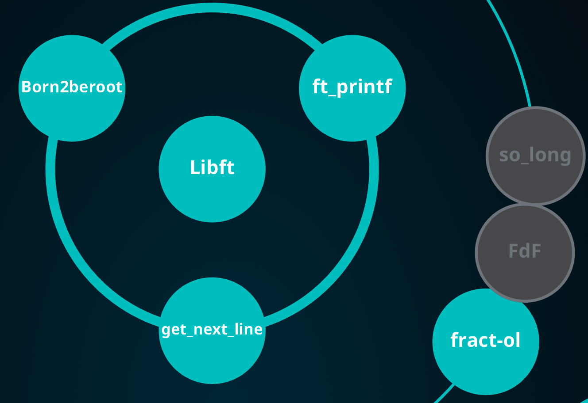
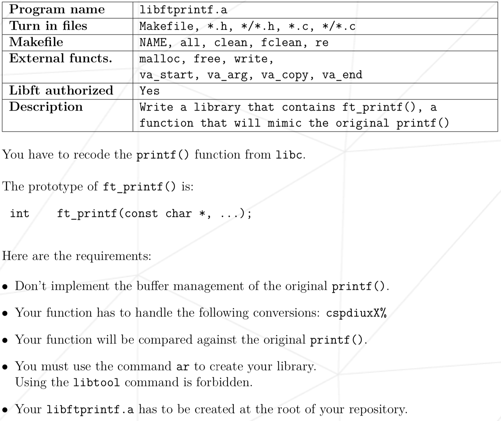
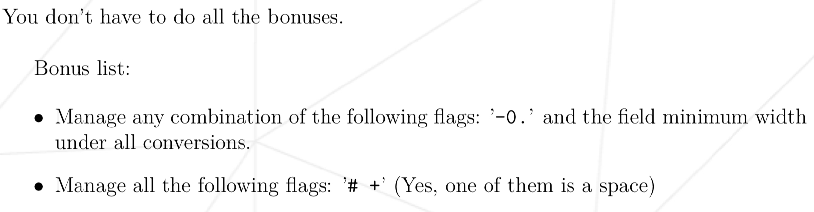
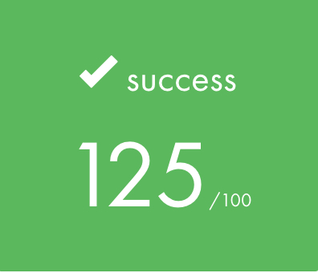
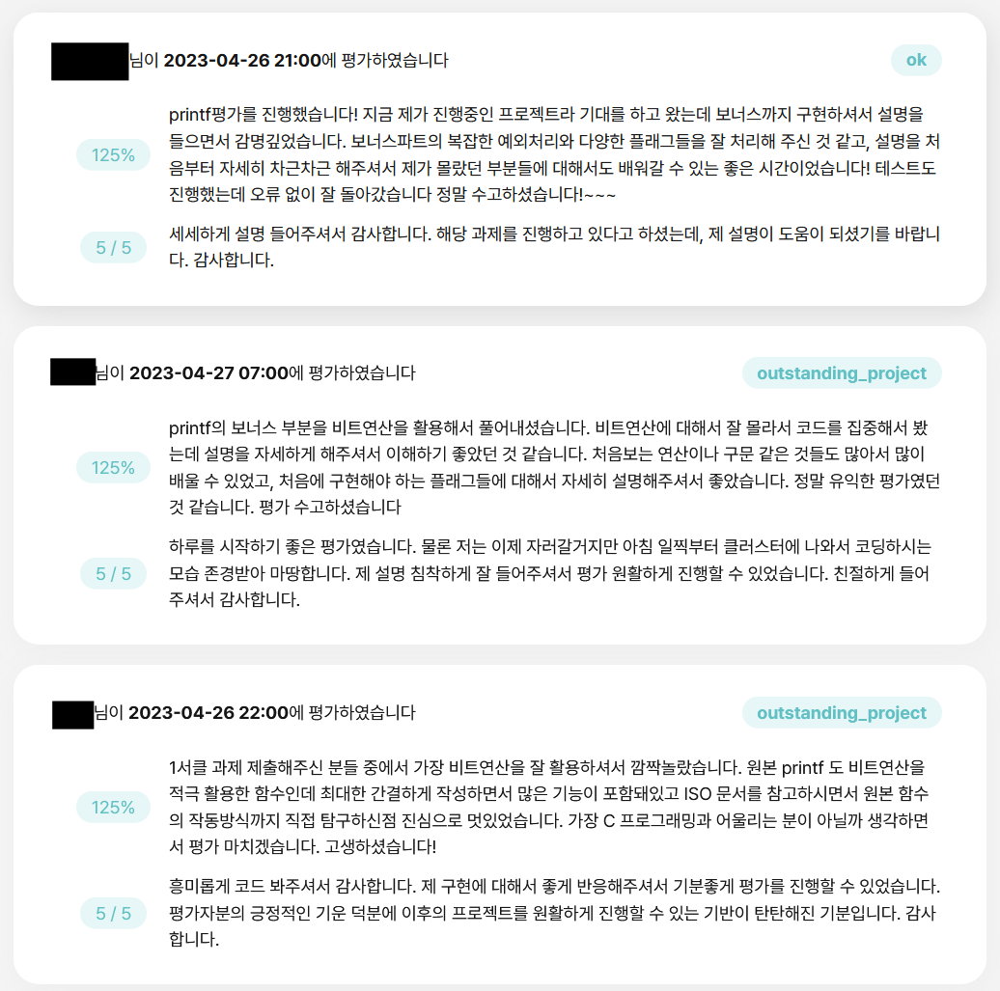

ft_printf

아직 작성중인 노트입니다.
Intro

ft_printf는 42 Seoul 공통과정 초반에 수행했던 과제입니다. 2년이라는 시간이 지나 코드의 세부 내용은 많이 희미해졌지만, C언어에 대한 기억을 되살려가며 코드를 하나씩 설명해보도록 하겠습니다.
프로젝트 설명
개요
이 프로젝트는 C언어의 printf 함수를 직접 구현하는 과제입니다. 얼핏 단순해 보이지만, printf의 작동 원리를 깊이 이해해야 하는 복잡한 과제입니다. (사실 어느정도 타협을 해서 구현을 해도 된다고 생각하지만, 이 부분을 납득하지 못하는 평가자를 만나면 곤란해질 수 있습니다.)
구현 시 반드시 norminette 규칙을 준수해야 하는데, 이는 코드의 가독성을 위한 것이고, 대표적인 예시는 다음과 같습니다.
- 파일당 함수 5개 이하
- 함수당 코드 25줄 이하
- 한 줄당 80자 이하
구현의 정확성을 위해 ISO C99 표준 문서의 285페이지를 참고했습니다. 자세한 내용은 코드와 함께 설명드리겠습니다.
이 포스팅에서 makefile과 ar 명령어에 대한 설명은 생략하겠습니다.
Mandatory

허용 함수부터 보겠습니다.
- malloc
- free
- write
- va_start, va_arg, va_copy, va_end
buffer는 따로 구현하지 않을 예정이기 때문에 malloc과 free 함수는 사용하지 않았습니다.
이중 눈여겨볼 함수는 va_ … 함수들인데, 각각의 설명은 이 문서를 참조했습니다. 간단히 설명하자면 이런겁니다. (c언어 프로그램의 메모리 구조, buffer 설명)
Bonus

flag에 대한 내용이 나옵니다. 이제 여기서부터 과제가 애매해지기 시작하는데, 구현 범위를 확실하게 정해야합니다. 그래야 undefined behavior가 발생시, 적절한 답변을 할 수 있습니다. 저는 ISO c99 문서를 기준으로 구현했습니다.
과제에서 제시한 flag들에 대한 설명이 나오는 부분을 한번 보겠습니다.
코드 설명
전체 코드는 github repo에서 확인 가능합니다.
header 먼저 살펴보도록 하겠습니다.
변수명이 마음에 안들지만, 협업 경험이 전혀 없던 시기에 작성한 코드임을 감안해주시길 바랍니다.
#ifndef FT_PRINTF_H
# define FT_PRINTF_H
/*printf에서 사용할 함수들을 macro로 설정해주었습니다. */
/*이 당시엔 enum을 몰라서 이렇게 구현을 했습니다..*/
# define F_WDTH 64
# define F_PREC 32
# define F_ZERO 16
# define F_LEFT 8
# define F_PLUS 4
# define F_SHAP 2
# define F_SPACE 1
# include <stdarg.h>
# include <unistd.h>
/*specifier 문자를 만났을 때, 어떻게 출력을 해야되는지에 대한 정보를 저장할 구조체입니다.*/
typedef struct s_info
{
unsigned int flag; /*이 변수에 flag 정보를 비트연산으로 저장합니다.*/
int field[2]; # 이건 뭐였지
int cnt; /*specifier 문자를 처리할 때, 출력하는 문자의 갯수를 저장합니다.*/
char cmd; /*어떤 specifier를 처리하는지 저장합니다.*/
} t_info;
int ft_printf(const char *s, ...);
int ft_putchr(char c, t_info *i);
int ft_printstr(char *s, t_info *i);
int ft_putnum(long long num, t_info *i, int cur);
int ft_puthex(unsigned long long n, t_info *i, int cur);
int ft_max(int a, int b);
int ft_padding(t_info *i, int n);
int ft_precision(t_info *i, int num, int n, int target);
#endif다음으로, ft_printf.c 파일의 함수들을 살펴보겠습니다.
int ft_printf(const char *s, ...)
{
va_list ap;
int cnt;
int tmp;
va_start(ap, s); # 변수 초기화
cnt = 0;
while (*s != '\0')
{
if (*s == '%') # format 문자를 만날 경우
{
s++;
tmp = ft_convert(&ap, &s); # format 문자를 ft_convert 함수에서 처리해줍니다.
}
else
tmp = write(1, s, 1); # format 문자가 아닐 경우 그대로 출력합니다.
if (tmp < 0)
return (-1); # 출력에 실패하면 -1을 반환합니다. 동적할당을 하지 않았기때문에 다른 조치는 취하지 않습니다.
cnt += tmp; # 출력한 문자 갯수만큼 계속 저장해줍니다.
s++;
}
va_end(ap);
return (cnt); # 최종적으로 출력에 성공한 문자의 갯수를 반환합니다.
}/*flag에 대한 정보를 먼저 처리해줍니다.*/
/*코드가 조금 특이하죠. 사실 norminette 때문에 이렇게 구현했습니다.*/
static int ft_convert(va_list *ap, const char **s)
{
t_info i;
int tmp;
i.flag = 0; # 변수들을 초기화 해줍니다.
i.cnt = 0;
i.field[0] = 0;
i.field[1] = 0;
while (**s == '#' || **s == ' ' || **s == '0' || **s == '-' || **s == '+')
{
tmp = "!!!!!!!!!!!!!!!!!!!!!!!!!!!!!!!!0!!1!!!!!!!2!3!!4"[(int)**s];
i.flag |= (1 << (tmp - '0'));
(*s)++;
}
while (**s == '.' || (**s >= '1' && **s <= '9'))
{
tmp = (**s == '.');
(*s) += tmp;
i.flag |= (F_WDTH >> tmp);
while (**s >= '0' && **s <= '9')
{
i.field[tmp] = i.field[tmp] * 10 + (**s - '0');
(*s)++;
}
}
return (ft_parse(ap, **s, i));
}static void ft_flag_validate(t_info *i)
{
if ((i->flag & F_ZERO) && (i->flag & F_LEFT))
i->flag &= ~F_ZERO;
if ((i->flag & F_ZERO) && (i->flag & F_PREC))
i->flag &= ~F_ZERO;
if ((i->flag & F_SPACE) && (i->flag & F_PLUS))
i->flag &= ~F_SPACE;
}
/*본격적으로 specifier를 처리해주는 로직입니다.*/
static int ft_parse(va_list *ap, char c, t_info i)
{
int status;
i.cmd = c;
ft_flag_validate(&i);
if (c == 'c')
status = ft_putchr((char)(va_arg(*ap, size_t)), &i);
else if (c == '%')
status = ft_putchr('%', &i);
else if (c == 's')
status = ft_printstr(va_arg(*ap, char *), &i);
else if (c == 'd' || c == 'i')
status = ft_putnum(va_arg(*ap, int), &i, 0);
else if (c == 'u')
status = ft_putnum(va_arg(*ap, unsigned int), &i, 0);
else if (c == 'p')
status = ft_puthex((unsigned long long)va_arg(*ap, void *), &i, 0);
else
status = ft_puthex(va_arg(*ap, unsigned int), &i, 0);
if (status < 0 || ft_padding(&i, i.cnt) < 0)
return (-1);
return (i.cnt);
}다음으로, parse.c 파일의 함수들을 입니다.
int ft_putchr(char c, t_info *i)
{
/*이 로직은 아래에서 사용됩니다.*/
if (c == '!' && i->cmd != 'c' && i->cmd != 's')
return (0);
if ((i->cmd == 'c' || i->cmd == '%') && !(i->flag & F_LEFT))
if (ft_padding(i, 1) < 0)
return (-1);
i->cnt++;
return (write(1, &c, 1));
}
int ft_printstr(char *s, t_info *i)
{
int len;
len = 0;
/*printf에서는 null이 오면 (null)을 출력한다는 점을 바탕으로 작성했습니다.*/
if (s == NULL)
return (ft_printstr("(null)", i));
while (s[len] && !((i->flag & F_PREC) && len >= i->field[1]))
len++;
if (!(i->flag & F_LEFT))
if (ft_padding(i, len) < 0)
return (-1);
len = 0;
while (s[len] && !((i->flag & F_PREC) && len >= i->field[1]))
{
if (ft_putchr(s[len], i) < 0)
return (-1);
len++;
}
return (0);
}
int ft_putnum(long long num, t_info *i, int cur)
{
int is_sign;
int is_put;
if (num < 0)
i->flag |= (F_PLUS + F_SPACE);
/*norminette 때문에 삼항연산자를 쓸 수 없어서 아래와 같이 작성했습니다.*/
num *= 1 * (num >= 0) + -1 * (num < 0);
is_sign = (i->flag & (F_PLUS + F_SPACE)) != 0;
is_put = !(num == 0 && cur == 0 && i->field[1] == 0 && (i->flag & F_PREC));
if (num < 10)
{
if ((i->flag & F_ZERO) && ft_putchr("! !!+-"[i->flag & 5], i) < 0)
return (-1);
if (!(i->flag & F_LEFT))
if (ft_padding(i, ft_max(cur + is_put, i->field[1]) + is_sign) < 0)
return (-1);
if (!(i->flag & F_ZERO) && ft_putchr("! !!+-"[i->flag & 5], i) < 0)
return (-1);
if ((i->flag & F_PREC))
return (ft_precision(i, num, cur, num % 10 + '0'));
return (ft_putchr(num % 10 + '0', i));
}
if (ft_putnum(num / 10, i, cur + 1) < 0 || ft_putchr(num % 10 + '0', i) < 0)
return (-1);
return (0);
}
int ft_puthex(unsigned long long num, t_info *i, int cur)
{
char s;
int is_sign;
/* %x나 %p specifier의 경우 소문자로 출력 */
s = "0123456789ABCDEF"[num % 16] | 32 * (i->cmd == 'x' || i->cmd == 'p');
is_sign = (i->cmd == 'p' || (!(cur == 0 && num == 0) && (i->flag & 2))) * 2;
if (num < 16)
{
if ((i->flag & F_ZERO) && is_sign != 0)
if (ft_putchr('0', i) < 0 || ft_putchr("xX"[i->cmd == 'X'], i) < 0)
return (-1);
if (!(i->flag & F_LEFT))
if (ft_padding(i, ft_max(cur + 1, i->field[1]) + is_sign) < 0)
return (-1);
if (!(i->flag & F_ZERO) && is_sign != 0)
if (ft_putchr('0', i) < 0 || ft_putchr("xX"[i->cmd == 'X'], i) < 0)
return (-1);
if ((i->flag & F_PREC))
return (ft_precision(i, num, cur, s));
return (ft_putchr(s, i));
}
if (ft_puthex(num / 16, i, cur + 1) < 0 || ft_putchr(s, i) < 0)
return (-1);
return (0);
}마지막으로 flag_utils.c 함수입니다.
#include "ft_printf.h"
int ft_max(int a, int b)
{
if (a >= b)
return (a);
return (b);
}
int ft_padding(t_info *i, int n)
{
char padding;
padding = ' ';
if (i->flag & F_ZERO)
padding = '0';
while ((i->flag & F_WDTH) && n < i->field[0])
{
if (write(1, &padding, 1) < 0)
return (-1);
i->cnt++;
n++;
}
return (0);
}
int ft_precision(t_info *i, int num, int n, int target)
{
if (num == 0 && n == 0 && i->field[1] == 0)
return (0);
while ((i->flag & F_PREC) && n < i->field[1] - 1)
{
if (ft_putchr('0', i) < 0)
return (-1);
n++;
}
return (ft_putchr(target, i));
}결과


Outro
C언어의 깊이 있는 매력을 경험할 수 있었던 과제라고 생각합니다. 특히 프로그램의 메모리 구조를 이해하는 과정에서 많은 것을 배울 수 있었습니다. 과제 구현의 범위가 난해하고, norminette을 지키는 것 때문에 어려움이 조금 있었지만, 그래도 흥미롭게 했던걸로 기억합니다.
사실 솔직히 말하면 제가 제출한 코드는 norminette을 아주 완벽하게 위반하고 있습니다. norminette에서는 한 줄에 여러 동작을 하는 코드를 작성하지 말라고 나와있는데, 뭐..네 그렇습니다. 그래도 소설로 비유하면 가끔은 비유법과 은유법이 들어가줘야 재미가 있는것 아니겠습니까? 남들이 조금 못 알아보면 어떻습니까? 가끔은 이런 재미있는 코드도 존재해야 발전이라는게 있는거죠.
..농담이고 협업할때는 절대 이렇게 코드를 작성하지 않습니다. 어쨌든 긴 글 읽어주셔서 감사합니다!